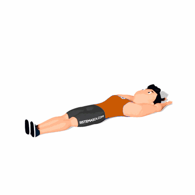

Abdominal Remador

O exercício define os músculos da região do abdome, com enfoque no reto do abdome. Além disso, ele também contribui para tonificação de outros grupos musculares, como os das costas e também o core.
Ficha Técnica
Tipo: Funcional
Grupo Muscular: Abdome
Aparelho: Nenhum
Músculos: Nenhum
Como realizar
- Comece se deitando de costas no chão, sobre um colchonete ou tapete de yoga;
- Suas pernas devem ficar retas no chão e seus braços dobrados atrás da cabeça;
- Em seguida, ao mesmo tempo que você vai contrair o seu abdômen, suas pernas deverão ser flexionadas;
- Erga o seu tronco totalmente até a direção dos joelhos e depois abrace eles quanto expiram o ar dos pulmões. 5. A parte inferior das costas deve ser mantida no chão, apenas as omoplatas é que irão se erguer em direção aos joelhos dobrados;
- Quando estiver no topo do exercício, inspire profundamente e depois desça lentamente expirando até que suas costas encostem novamente no chão.
 RC STORE
RC STORE